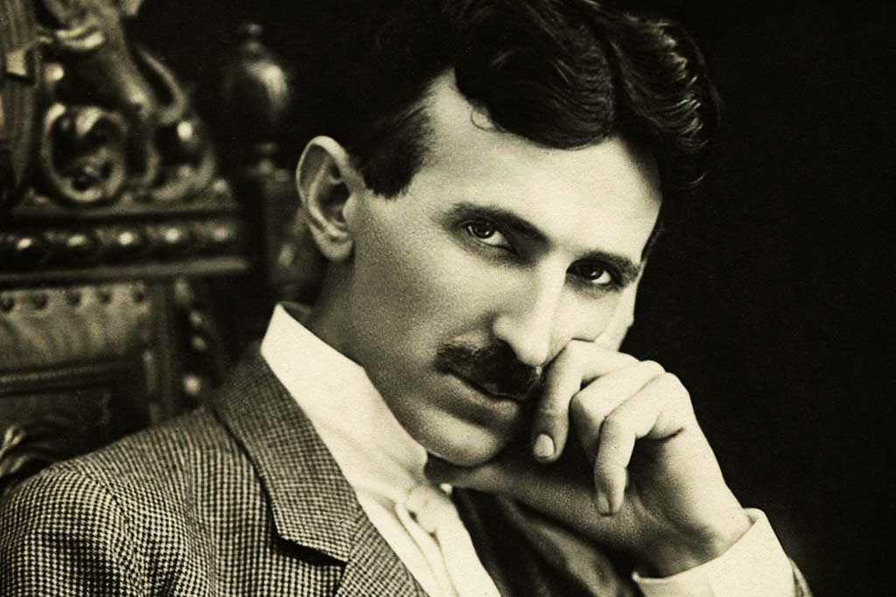

- 1856: Nasce durante uma tempestade de raios em Smiljan, atual Croácia.
- 1884: Imigra para os Estados Unidos com pouco dinheiro para trabalhar nas empresas de Thomas Edison.
- 1887: Registra a patente do motor de indução de Corrente Alternada (AC), tecnologia vital até hoje.
- 1891: Inventa a Bobina de Tesla, dispositivo capaz de gerar altíssimas voltagens e frequências.
- 1893: Brilha na Feira Mundial de Chicago, provando a superioridade da Corrente Alternada sobre a Contínua.
- 1895: Projeta a primeira grande hidrelétrica do mundo nas Cataratas do Niágara, energizando a cidade de Buffalo.
- 1898: Apresenta o primeiro barco controlado por rádio no Madison Square Garden, pioneiro da robótica.
- 1899: Realiza experimentos de transmissão de energia sem fio e raios artificiais em Colorado Springs.
- 1901: Inicia a construção da Torre Wardenclyffe, sonhando com um sistema mundial de comunicação sem fio.
- 1943: Falece sozinho em Nova York; meses depois, a Suprema Corte dos EUA reconhece sua prioridade na invenção do Rádio.
"O presente é deles; o futuro, pelo qual eu realmente trabalhei, é meu."
-- Nikola Tesla